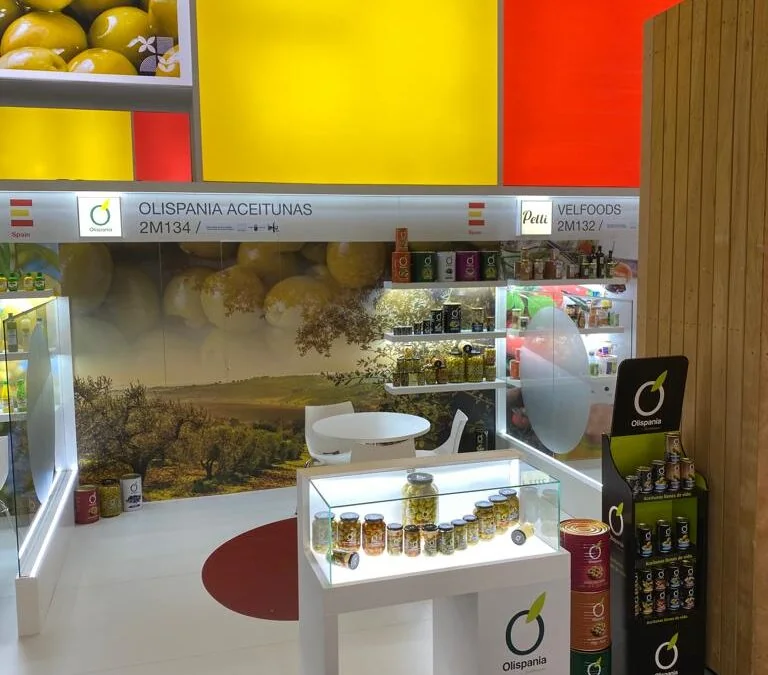
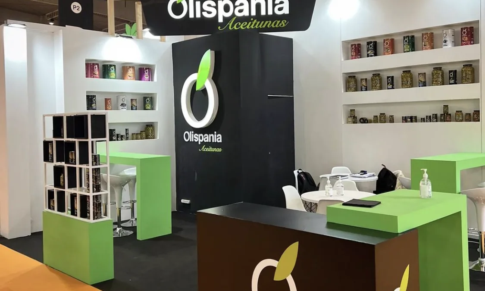
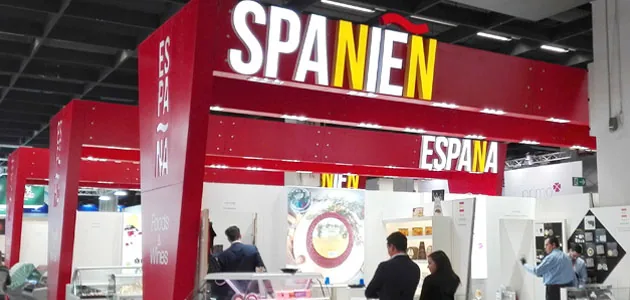

Noticias
Últimas noticias.
Pulsa en una noticia para leerla.
-

FeriasPrograma de ayudas para la participación en la feria SIAL 2022Olispania Aceitunas recibe una subvención para el programa de ayudas para la participación en la feria SIAL. Esta ayuda está cofinanciada por el Instituto de Fomento de la Región de Murcia y la Unión Europea a través de los Fondos FEDER (Fondo Europeo de Desarrollo Regional “Una manera de hacer Europa”)

-

FeriasPrograma de ayudas para la participación en la feria ANUGA 2021Olispania Aceitunas recibe una subvención para el programa de ayudas para la participación en la feria ANUGA. Esta ayuda está cofinanciada por el Instituto de Fomento de la Región de Murcia y la Unión Europea a través de los Fondos FEDER (Fondo Europeo de Desarrollo Regional “Una manera de hacer Europa”)
-

FeriasPrograma de ayudas para la participación en la feria ANUGA 2019Olispania Aceitunas recibe una subvención para el programa de ayudas para la participación en la feria ANUGA 2019. Esta ayuda está cofinanciada por el Instituto de Fomento de la Región de Murcia y la Unión Europea a través de los Fondos FEDER (Fondo Europeo de Desarrollo Regional “Una manera de hacer Europa”)